Généralités
Un capteur est un dispositif qui, soumis à l'action d'une grandeur physique, fournit un signal pour la partie commande. Ce signal est parfois pneumatique, mais dans la grande majorité des cas il est électrique.
Structure fonctionnelle
Le terme capteur englobe deux éléments :
- le corps d'épreuve, qui capte une grandeur physique à mesurer (vitesse, température, débit, pression…) ou détecte un état (présence, niveau haut, niveau bas) ;
- le transducteur-adaptateur, qui transforme cette grandeur en signal de sortie transmis à la partie commande par une liaison physique (câble, fibre optique) ou immatérielle (ondes radio).
Le nom dépend du signal de sortie
Les familles
La famille la plus fournie est celle des détecteurs de présence : par contact ou de proximité. Pour la position ou le déplacement d'un mobile, on utilise surtout des codeurs optiques. On trouve aussi des capteurs de vitesse, température, pression, débit, force / couple, vibration / acoustique…
Chaîne d'acquisition
En vrai
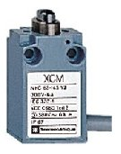
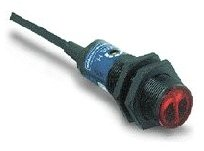
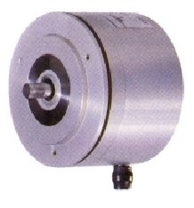
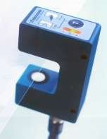
Détecteurs de présence par contact
Aussi appelés interrupteurs de position, ce sont des commutateurs actionnés par le déplacement d'un organe de commande (galet, levier, poussoir, tige).
Lorsqu'ils sont actionnés, ils ouvrent ou ferment un ou plusieurs circuits électriques ou pneumatiques. De nombreuses versions existent selon l'encombrement et la nature du mouvement à prendre en compte.
Le signal de sortie est tout ou rien.
Le guide de choix les retient pour un objet solide, de masse supérieure à 500 g, avec une durée de passage supérieure à 1,5 ms et une fréquence de passage inférieure à 1 Hz, quand le contact physique est possible.
Banc d'essai : interrupteur à galet
En vrai
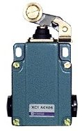
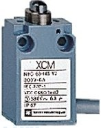
La détection sans contact
On l'utilise chaque fois qu'il faut détecter la présence d'un élément sans le toucher. Avantages : pas de contact physique, pas d'usure, possibilité de détecter des objets fragiles ou fraîchement peints.
On distingue 6 familles de détecteurs de proximité électriques. Pour des usages particuliers, il existe aussi des détecteurs de proximité pneumatiques (capteurs à fuite).
| Famille | Détecte | Portée | À retenir |
|---|
Détecteurs inductifs
Ils fonctionnent grâce à la variation d'un champ électromagnétique perturbé par la proximité d'un objet métallique.
La distance de détection varie de 1 à 60 mm selon le type de capteur, les conditions d'utilisation et la nature du métal (acier, aluminium, cuivre…). Ils supportent bien les ambiances humides ou poussiéreuses.
Principe
Le détecteur contient un oscillateur dont les bobinages forment la face sensible : un champ magnétique alternatif est créé à l'avant, comme un aimant dont la polarité changerait en permanence.
Un objet métallique placé dans ce champ développe à sa surface des courants induits qui contrarient le champ initial et provoquent l'arrêt des oscillations. Un circuit électronique détecte cette modification et délivre le signal de sortie.
Banc d'essai : portée selon le métal
Détecteur à portée nominale Sn = 10 mm sur acier. Coefficients de réduction typiques des catalogues, à titre indicatif.
En vrai
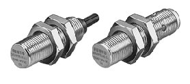
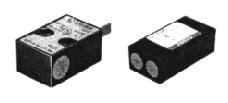
Détecteurs capacitifs
Ils détectent des matériaux de toute nature : verre, plastique, métaux, liquides, poudres… On les emploie surtout pour les éléments non conducteurs, que les inductifs ne voient pas.
Ils sont très sensibles aux modifications de l'environnement (saletés, poussières) et leur distance de détection est faible, quelques millimètres. La plupart ont un potentiomètre de réglage de la sensibilité, à l'arrière du boîtier. Délicats à mettre en œuvre, ils ne sont employés que lorsqu'aucune autre technologie ne convient.
Ordres de grandeur des distances
| Matériau | Distance | Matériau | Distance |
|---|---|---|---|
| Carton | 4 mm | Acier | 10 mm |
| Bois | 4 mm | Verre | 7 mm |
| Eau | 10 mm | PVC | 6 mm |
Banc d'essai : tous matériaux
En vrai
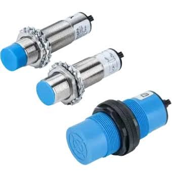
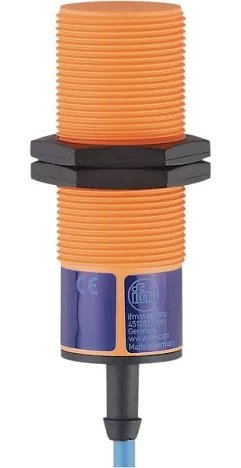
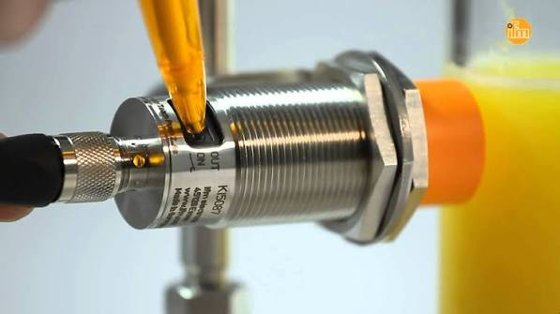
Détecteurs magnétiques (ILS)
Les détecteurs magnétiques, ou interrupteurs à lame souple (ILS), sont fixés directement sur le corps du vérin dont le piston comporte un aimant : gain de place et simplicité.
Quand l'aimant passe à proximité, le contact se ferme et l'information est donnée à la partie commande. Quand il s'éloigne, le contact s'ouvre et l'information disparaît.
Attention
L'information est acquise au niveau de l'actionneur (positions extrêmes), pas de l'effecteur ni de la matière d'œuvre. Si l'outil est brisé, le travail n'est pas réalisé, mais la tige du vérin est quand même sortie : la partie commande l'ignore.
On les retrouve aussi dans les alarmes d'ouverture de porte.
Banc d'essai : vérin avec deux ILS
En vrai
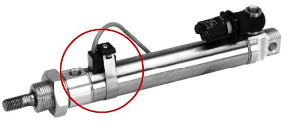
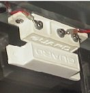
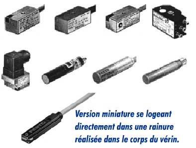
Détecteurs photoélectriques
Un émetteur (en général une LED) et un récepteur de lumière (en général un phototransistor). Le détecteur délivre une information chaque fois que le faisceau est interrompu par un objet opaque. Pour être insensible à la lumière ambiante, la lumière est émise à fréquence fixe (infrarouge par exemple).
Trois procédés
- Reflex : émetteur et récepteur dans le même boîtier, faisceau renvoyé par un réflecteur. Portée jusqu'à 10 m.
- Barrage : émetteur et récepteur de part et d'autre de l'objet. Portée jusqu'à 30 m, adapté aux environnements difficiles.
- Proximité : même boîtier, c'est l'objet qui réfléchit le faisceau. Cible réfléchissante, portée de l'ordre de 1,5 m selon la couleur et le pouvoir réfléchissant.
Fibre optique
Émetteur et récepteur déportés : la lumière circule dans des fibres (cœur plastique ou verre, diamètre de l'ordre de 2 mm). Idéal pour de très petites pièces ou une zone peu accessible. Portée réduite : 20 mm en proximité, 300 mm en barrage.
Banc d'essai : choisir le procédé
En vrai
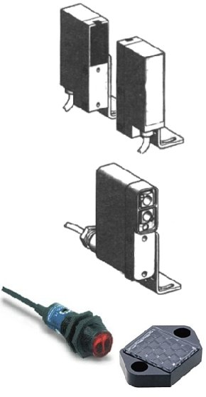
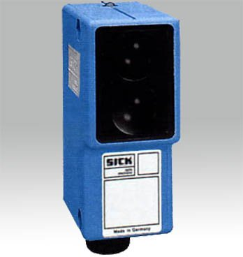
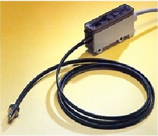
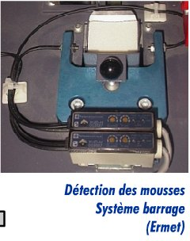
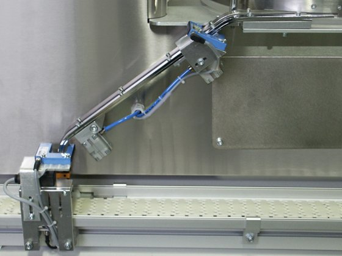
Capteurs à effet Hall
Un capteur à effet Hall détecte la présence d'un champ magnétique ou sa variation : présence d'un aimant, ou, équipé d'un aimant permanent, modification du flux lors du déplacement d'un objet métallique. Il est très employé pour la mesure de vitesse avec une roue dentée.
L'effet Hall
Découvert en 1879 par Edwin Hall : une différence de potentiel apparaît sur les bords latéraux d'un conducteur parcouru par un courant et soumis à un champ magnétique.
Capteur à fourche, roue dentée
Le passage d'une dent métallique modifie le champ de l'aimant, donc la tension de Hall. Le capteur met le signal en forme : un train d'impulsions dont la fréquence donne la vitesse de rotation.
Pour une roue de z dents tournant à N tr/min : f = z × N / 60 (en Hz).
Banc d'essai : roue de 12 dents
En vrai
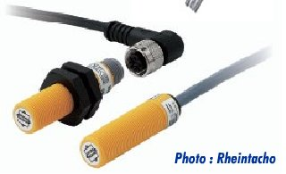
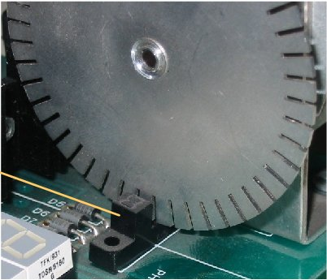
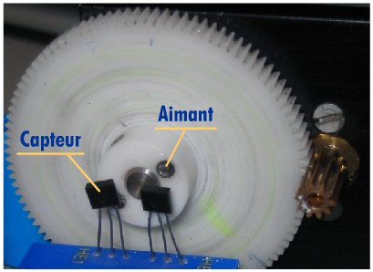
Détecteurs à ultrasons
Ils détectent sans contact tout objet, quel que soit le matériau (métal, plastique, bois, carton), la nature (solide, liquide, poudre), la couleur ou la transparence.
Applications : présence de pièces, passage de bouteilles en verre ou d'emballages sur convoyeur, niveau de peinture dans des pots ou de granulés dans une trémie.
Principe
Le transducteur, excité par un générateur haute tension, émet une onde ultrasonore de 200 à 500 kHz qui se propage dans l'air à la vitesse du son. L'onde réfléchie par l'objet (l'écho) revient au transducteur. Un microcontrôleur mesure le temps écoulé et le compare aux temps prédéfinis pour commander une sortie NO ou NC.
Distance : d = v × t / 2, avec v ≈ 340 m/s dans l'air.
Avantages
- Pas de contact ni d'usure : objets fragiles, peints, chauds.
- Tout matériau et toute couleur à la même portée, sans facteur de correction.
- Pas de pièce mobile : durée de vie indépendante du nombre de cycles.
- Mesure de l'éloignement, de 1 ou 2 cm à plus de 10 m.
- Apprentissage par bouton des portées minimale et maximale.
Banc d'essai : écho et fenêtre
En vrai
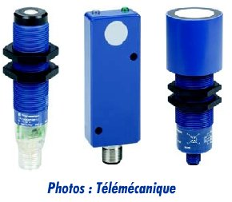
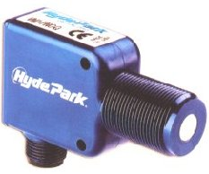
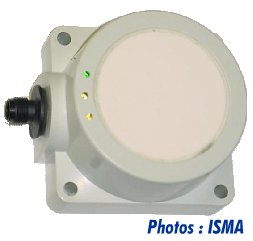
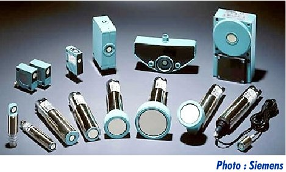
Codeurs optiques
Les détecteurs de fin de course ne donnent qu'une information binaire. Pour connaître à tout instant la position, la vitesse ou le déplacement d'une partie mobile, on utilise des codeurs, liés mécaniquement à l'arbre dont on veut suivre la rotation.
Principe commun : un disque à zones opaques et translucides, des LED d'un côté, des phototransistors de l'autre. Chaque phototransistor délivre un signal quand une ouverture passe devant lui.
Codeur incrémental
Il délivre un train d'impulsions : leur nombre donne le déplacement, leur fréquence la vitesse. Pour un tour, la partie commande reçoit autant d'impulsions qu'il y a de fenêtres.
- Piste intérieure Z : une impulsion par tour, pour compter les tours.
- Deux têtes A et B sur la piste extérieure, décalées l'une de l'autre. Chacune permet de compter l'angle ; la voie qui change d'état en premier donne le sens de rotation.
L'information est relative : il faut d'abord définir une origine.
Banc d'essai : 12 fenêtres, voies A, B, Z
Codeur absolu (numérique de position)
Plusieurs pistes concentriques, une tête de lecture par piste : la partie commande reçoit directement un code sur n bits (n = nombre de pistes), sans traitement. Jusqu'à 24 pistes en industrie. Avec 5 pistes : 2⁵ = 32 positions par tour. L'information est absolue dans un tour.
Les pistes suivent le code Gray (binaire réfléchi) : d'une position à la suivante, un seul bit change. Un léger défaut d'alignement des têtes ne produit donc jamais de position aberrante, ce qui arriverait en binaire pur. En contrepartie, la partie commande doit convertir le code si elle doit calculer.
Les pistes les plus fines sont à l'extérieur, les grandes zones translucides à l'intérieur.
Banc d'essai : disque Gray 5 pistes
En vrai
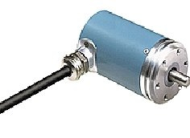
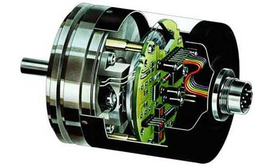
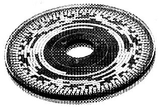
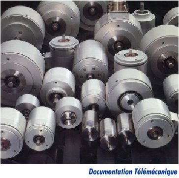
Pressostats et vacuostats
Le pressostat (manocontact) délivre une information lorsque la pression appliquée dépasse un seuil, souvent réglable.
La pression agit sur une membrane ou un piston qui ferme le contact électrique ; quand elle disparaît, un ressort ramène le contact au repos. La pression minimale d'action dépend de l'effort du ressort, parfois réglable.
Il en existe pour de nombreux usages : présence d'une pression, seuil atteint, pression entre deux seuils, comparaison avec une référence ou avec la pression atmosphérique. Chaque modèle a sa plage (0–2 bar, 0–10 bar…). Les versions électroniques ont une fonction d'apprentissage qui mémorise la pression de seuil.
Vacuostat
Il détecte une dépression, de manière différentielle : il réagit quand l'écart entre la pression appliquée et une référence (souvent la pression atmosphérique) dépasse le seuil réglé. Plage courante : −0,2 à −1 bar.
Banc d'essai
En vrai
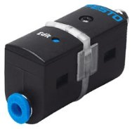
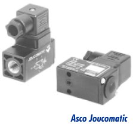
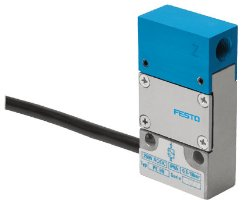
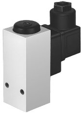
Câblage PNP ou NPN
Les détecteurs de proximité électroniques ont une sortie à transistor qui agit comme un contact. Ils ont en principe 3 fils :
- Brun (ou rouge) : alimentation + 24 V CC
- Bleu : 0 V
- Noir : sortie, reliée à l'entrée de l'automate
PNP
Le transistor de sortie fonctionne en commutation : bloqué, il se comporte comme un contact ouvert ; passant (saturé), comme un contact fermé. C'est le courant de base, envoyé par l'électronique de détection, qui le rend passant.
PNP : en détection, le transistor devient passant et la sortie passe à +24 V. L'entrée de l'automate passe à 1 sur un potentiel positif : pour les automates en logique positive.
NPN
En détection, le transistor devient passant et la sortie passe à 0 V. L'entrée passe à 1 sur un potentiel nul : pour les automates en logique négative.
Banc d'essai : câblage vers l'automate
En vrai
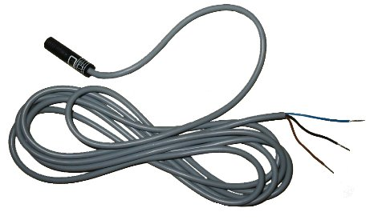
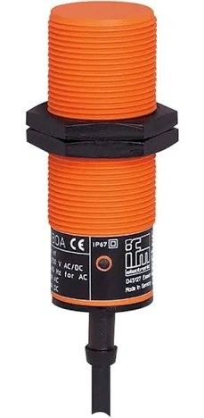
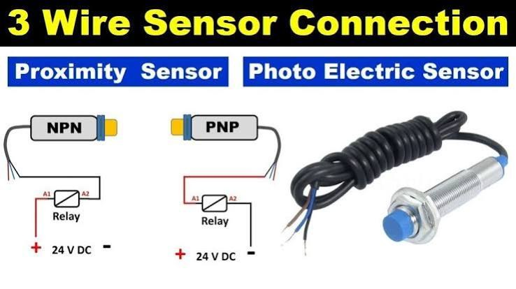
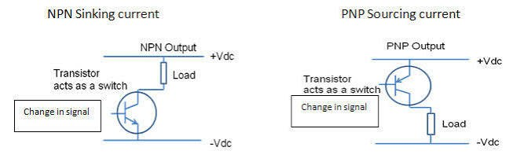
Les chapitres 12 à 19 complètent les fiches du cours avec d'autres capteurs courants en maintenance industrielle.
Capteurs de température
Trois capteurs analogiques dominent en industrie (Pt100, thermocouple, thermistance CTN). On rencontre aussi des capteurs TOR (CTP de protection, bilame) et la mesure sans contact par pyromètre. Choisis un onglet, puis fais varier la température.
En vrai
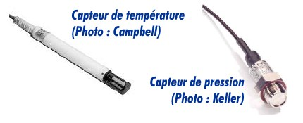
Transmetteurs et signal 4–20 mA
Un transmetteur associe un capteur et une électronique qui convertit la mesure en un signal normalisé transmis à l'automate : le plus souvent 4–20 mA, parfois 0–10 V.
La plage de mesure est répartie linéairement : 4 mA = 0 % de l'échelle, 20 mA = 100 %. Soit I = 4 + 16 × (mesure / étendue).
Pourquoi 4 mA et pas 0 ?
C'est le « zéro vivant » : un courant inférieur à 4 mA (environ 3,6 mA et moins) signale un défaut, comme un fil coupé ou un transmetteur hors tension. Avec 0–10 V, un fil coupé se confondrait avec une mesure nulle.
Pourquoi un courant ?
Le courant est le même dans toute la boucle : la longueur du câble ne fausse pas la mesure et le signal résiste mieux aux parasites. Beaucoup de transmetteurs sont 2 fils : ils sont alimentés par la boucle elle-même (24 V).
Banc d'essai : transmetteur de pression 0–10 bar
En vrai
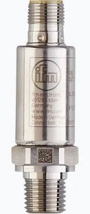
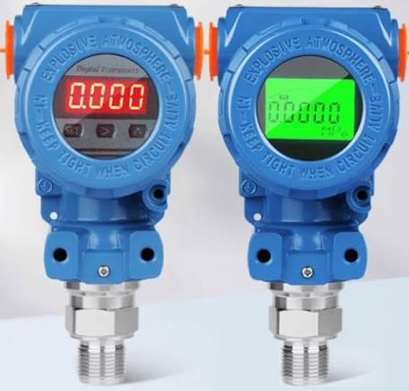
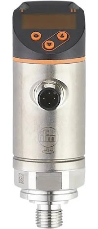
Force et pesage : jauges de contrainte
Une jauge de contrainte est un fin fil résistif collé sur une pièce métallique (le corps d'épreuve). Quand la pièce se déforme sous une charge, la jauge s'allonge ou se raccourcit et sa résistance varie très légèrement.
Pour mesurer ces faibles variations, on monte quatre jauges en pont de Wheatstone. Le pont, alimenté sous une tension fixe (par exemple 10 V), délivre une tension de quelques millivolts proportionnelle à la charge.
Le capteur de pesage (cellule de charge)
Sa sensibilité s'exprime en mV/V à pleine charge : une cellule de 2 mV/V alimentée en 10 V donne 20 mV à sa charge nominale. Un amplificateur ou conditionneur transforme ce signal en 4–20 mA, 0–10 V ou en valeur numérique pour l'automate.
Applications : bascules et doseurs, contrôle de remplissage, mesure d'effort de presse, couplemètres.
Banc d'essai : cellule 50 kg, 2 mV/V, alimentation 10 V
En vrai
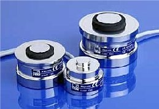
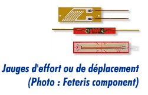
Capteurs de niveau
On distingue la détection de seuil (TOR : niveau haut, niveau bas) et la mesure continue (analogique : hauteur en mètres ou volume). Choisis une technologie, puis fais varier le niveau de la cuve.
Débitmètres
Le débit volumique est le volume qui traverse une section par unité de temps : Q = v × S (vitesse moyenne × section de la conduite). Chaque technologie mesure le débit à sa façon : choisis un onglet, puis fais varier la conduite et la vitesse.
Capteurs de position analogiques
Ils donnent une position en continu, sur toute la course, là où un détecteur ne dit que « arrivé / pas arrivé ». Choisis une technologie, puis déplace la cible.
Sécurité, identification et vision
Barrières immatérielles
Des faisceaux infrarouges parallèles forment un rideau lumineux devant une zone dangereuse. Si une main ou un corps coupe un faisceau, le module de sécurité arrête la machine. Elles se classent en type 2 ou type 4 (le plus exigeant) selon la norme IEC 61496.
Interrupteurs de sécurité
Placés sur les protecteurs mobiles (portes, carters), ils ont des contacts à ouverture forcée ou un codage (languette, RFID) pour ne pas être neutralisés facilement. On les raccorde à un relais ou un automate de sécurité, jamais à une simple entrée standard.
Tapis sensibles
Ils détectent la présence d'une personne qui marche sur une zone au sol.
Identification RFID
Une étiquette (tag) fixée sur la pièce ou la palette contient des données lisibles et parfois réinscriptibles par radio, sans contact ni visibilité directe. Usage : traçabilité, suivi de production, changement de recette automatique.
Codes-barres et Datamatrix
Lus par des lecteurs optiques ; le Datamatrix (code 2D) stocke plus d'informations dans une petite surface et peut être gravé directement sur la pièce.
Capteurs de vision
Une caméra et un logiciel analysent l'image : présence, position, couleur, dimensions, lecture de caractères. Ils remplacent plusieurs détecteurs pour le contrôle qualité.
Banc d'essai : presse protégée
Ce que montre le banc
- La presse ne fonctionne que si la barrière n'est pas coupée et si la porte arrière est fermée.
- Avance la main : dès qu'un faisceau est coupé, le module de sécurité arrête la presse.
- Retirer la main ou refermer la porte ne relance pas la machine : il faut un réarmement volontaire, qui n'est accepté que si tout est redevenu sûr. Cela évite un redémarrage inattendu.
- Le bouton Réarmer est refusé tant qu'un faisceau est coupé ou que la porte est ouverte.
Simulation simplifiée : une vraie installation se conçoit selon l'analyse de risques et les normes applicables (distance de sécurité, catégorie ou niveau de performance de la chaîne).
Raccordement des capteurs : fils, broches et tensions
Ce chapitre regroupe le raccordement de tous les capteurs du cours : choisis un capteur dans le schéma interactif ou dans le tableau récapitulatif. Les couleurs de fils et les numéros de broches des détecteurs de proximité sont normalisés (norme IEC 60947-5-2). Les connaître permet de câbler et de dépanner sans hésiter.
| Fil | Code | Broche M12 | Rôle |
|---|---|---|---|
| Brun | BN | 1 | Alimentation + (24 V CC) |
| Blanc | WH | 2 | Deuxième sortie (NC complémentaire) ou sortie analogique |
| Bleu | BU | 3 | 0 V |
| Noir | BK | 4 | Sortie TOR (NO) |
Les tensions à connaître
- Détecteurs CC : alimentation de 10 à 30 V CC en général, 24 V nominal.
- Entrée TOR 24 V d'automate (IEC 61131-2, type 1) : l'état 1 est garanti au-dessus de 15 V, l'état 0 en dessous de 5 V.
- Détecteur 2 fils : il se place en série avec la charge. Passant, il fait chuter quelques volts ; bloqué, il laisse passer un petit courant résiduel. Vérifie qu'ils sont compatibles avec l'entrée de l'automate.
- Signaux analogiques : 4–20 mA (transmetteur souvent 2 fils, alimenté par la boucle) ou 0–10 V (3 fils).
- Pt100 : pas d'alimentation ; fils rouges et blancs (IEC 60751), en 2, 3 ou 4 fils.
Raccordement d'un codeur incrémental
- Alimentation : 5 V CC (sortie TTL / RS422) ou 10–30 V CC (sortie HTL push-pull).
- Signaux : voies A et B (décalées, pour le sens), voie Z (top zéro, 1 impulsion par tour).
- Sortie différentielle (line driver RS422) : chaque voie a son complément /A, /B, /Z. La carte compare les deux fils, ce qui rejette les parasites sur de longues distances.
- Les voies se raccordent sur des entrées de comptage rapide de l'automate ou sur une carte de comptage : une entrée TOR standard, filtrée, est trop lente.
- Câble blindé, blindage relié à la masse, câble séparé des câbles de puissance.
Les couleurs des fils des codeurs et des transmetteurs analogiques varient selon le fabricant : vérifie toujours la notice et l'étiquette du capteur.
Schéma de raccordement interactif
| Fil | Broche | Raccordé à | Tension / signal |
|---|
Raccordement de chaque capteur du cours
| Capteur | Raccordement | Alimentation | Sortie | Schéma |
|---|---|---|---|---|
| Interrupteur de position | 2 à 4 bornes : 13-14 (NO), 21-22 (NC) | Aucune (contact sec) | Contact TOR | |
| Inductif, capacitif | 3 fils BN / BU / BK (existe en 2 et 4 fils) | 10–30 V CC | TOR PNP ou NPN | |
| Magnétique ILS | 2 fils (3 fils pour les versions électroniques) | Aucune ou 24 V CC | Contact TOR | |
| Photoélectrique barrage | Émetteur 2 fils + récepteur 3 ou 4 fils | 10–30 V CC | TOR PNP ou NPN | |
| Photoélectrique reflex, proximité | 3 ou 4 fils (NO + NC) | 10–30 V CC | TOR | |
| Effet Hall (vitesse) | 3 fils BN / BU / BK | 10–30 V CC en général | Impulsions PNP ou NPN | |
| Ultrasons | 4 fils (TOR + analogique) ou 3 fils | 10–30 V CC | TOR + 4–20 mA ou 0–10 V | |
| Codeur incrémental | 5 fils (A, B, Z) ou 8 fils avec /A, /B, /Z | 5 V ou 10–30 V CC | Impulsions | |
| Codeur absolu | 6 fils (SSI) ou bus de terrain | 10–30 V CC | Position en série | |
| Pressostat mécanique | 3 bornes : commun, NO, NC | Aucune (contact sec) | Contact inverseur | |
| Pressostat électronique | 3 ou 4 fils | 10–30 V CC | TOR PNP, parfois + 4–20 mA | |
| Sonde Pt100 | 2, 3 ou 4 fils rouges et blancs | Aucune (courant injecté par le module) | Résistance | |
| Thermocouple K | 2 fils : vert (+), blanc (−) | Aucune | Quelques mV | |
| Transmetteur pression, niveau, débit | 2 fils (boucle de courant) | 24 V CC par la boucle | 4–20 mA | |
| Transmetteur à sortie tension | 3 fils | 24 V CC | 0–10 V | |
| Cellule de charge | 4 ou 6 fils | 5 à 10 V CC par le conditionneur | Quelques mV | |
| Potentiomètre | 3 fils : 2 extrémités + curseur | Tension de référence (10 V) | 0 à 10 V | |
| Flotteur | 2 fils | Aucune (contact) | Contact TOR | |
| Débitmètre à turbine | 3 fils | 10–30 V CC | Impulsions | |
| Barrière immatérielle | Émetteur 2 fils + récepteur 4 fils ou plus | 24 V CC | 2 sorties OSSD | |
| Interrupteur de sécurité | 2 contacts NC (4 bornes) | Aucune | Contacts à ouverture forcée | |
| RFID, vision | Câble de bus (IO-Link, Profinet…) | 24 V CC | Données numériques | — |
Le bouton « Voir » ouvre le schéma correspondant ci-dessus. Pour les capteurs sans code couleur normalisé, suis toujours la notice du fabricant.
Exercice : câble le détecteur
Guide de choix : que doit-on détecter ?
L'organigramme du cours, question par question. Réponds et le guide te mène au détecteur adapté.